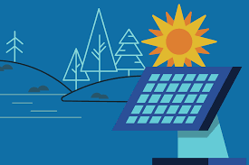

Dunia sekarang semakin banyak isu - isu global yang terjadi terutama yang berhubungan dengan SDGs 7 juga banyak sekali, seperti contohnya :
1. Perubahan Iklim dan Transisi energi
- Pemanasan global saat ini menjadi salah satu isu global besar yang harus kita hadapi dan selesaikan karena dampaknya-pun kita rasakan sendiri. Tidak hanya Indonesia tetapi hampir seluruh negara juga merasakan dampaknya. Faktor - faktor dari pemanasan global ini banyak tetapi salah satunya adalah pembakaran bahan bakar fosil. Maka tidak hanya Indonesia, tetapi banyak negara juga yang berusaha untuk menurunkan emisi karbon dari sektor energi.
- Salah satu upaya Indonesia adalah dengan adanya program UK - Indonesia Low Carbon Energy Programme. Menurut saya ini adalah program yang sangat bagus karena dapat mendukung transisi energi di Indonesia melalui : Pengembangan kebijakan energi karbon, Pembiayaan proyek energi terbarukan, seperti tenaga surya dan biomassa, dan Pelatihan teknis dan peningkatan kapasitas untuk mengelola energi bersih.
2. Akses Energi Global yang terbatas
- Di dunia sekarang masih ada sekitar 759 juta orang yang hidup tanpa adanya akses listrik. Hal ini masih sangat banyak terutama di daerah - daerah terpencil, dan susah dijangkau di negara berkembang.
- Dengan adanya energi bersih, hal ini dapat memberikan solusi jangka panjang untuk memperluas akses - akses listrik ke daerah yang susah untuk dijangkau.

.png)